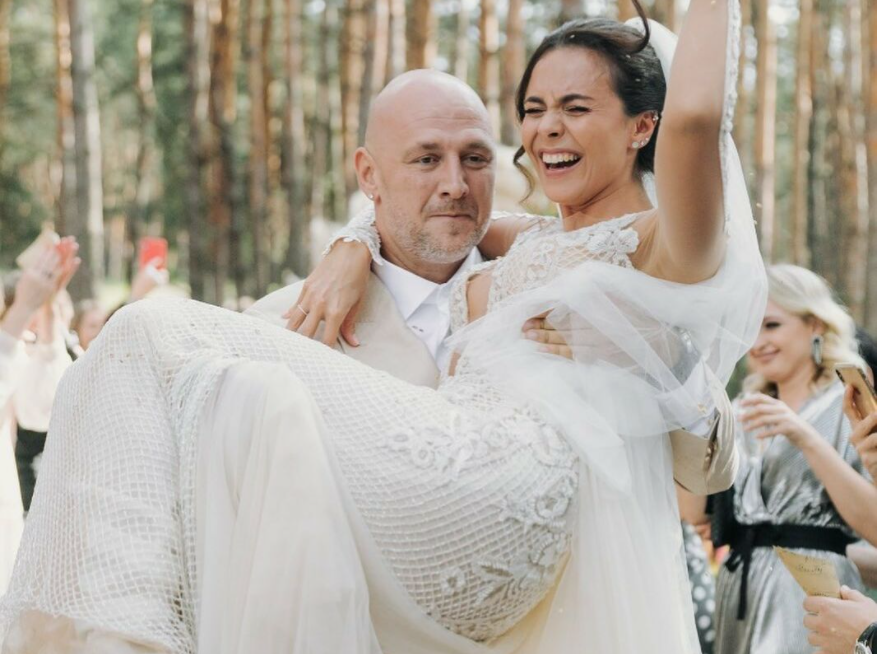
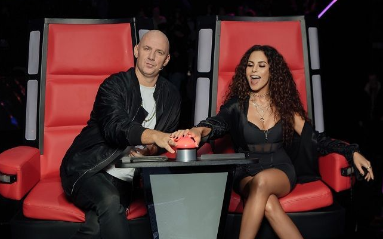
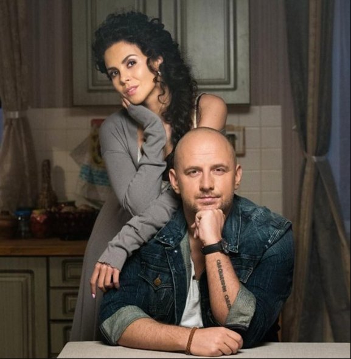

|
«Потап и Настя» — український музичний колектив, заснований 2006 року Олексієм Потапенком та Анастасією Каменських.
Співпраця Потапа та Насті почалася з пісні «Не пара». Виконавців звів продюсер Руслан Мінжинський. У жовтні 2017 року учасники гурту заявили, що «ставлять дует на паузу».
Дискографія
2008 — «Не пара»
2009 — «Не люби мне мозги»
2013 — «Все пучком»
2015 — «Щит и Мяч»
Відеокліпи
Потап та Настя — Без любви (2006)
Потап та Настя — Не пара (2007)
Потап та Настя — Внатуре (2007)
Потап та Настя — Крепкие Орешки (2007)
Потап та Настя — Разгуляй (2008)
Потап та Настя — На раЁне (2008)
Потап та Настя — Почему (2008)
Потап та Настя — Не люби мне мозги (2009)
Потап та Настя — Новый год (2009)
Потап та Настя — Край ми э ривер (2010)
Потап та його команда — Лето (2010)
Потап та його команда — Море пенится (2010)
Потап та Настя — Чипсы, чиксы, лавандос (Село) (2010)
Потап та Настя — Ты влип Филипп (2010)
Потап та Настя — Выкрутасы (2011)
Потап та Настя — Чумачечая весна (2011)
Потап та Настя — Мы отменяем К. С.(2011)
Потап та Настя — Если вдруг (2011)
Потап та Настя — Прилелето (2012)
Потап та Настя — Улелето (2012)
Потап та Настя — РуРуРу (2013)
Потап та Настя — Вместе (2013)
Потап та Настя — Все пучком (2013)
Потап та Настя — Уди Уди (2014)
Потап та Настя — Бумдиггибай (2015)
Потап та Настя feat. Б'янка — Стиль собачки (2015)
Потап та Настя — У мамы (2016)
Потап та Настя — Я…Я (Ядовитая) (2017)
Нагороди
Гран-прі «П'ять Зірок», Пісня Року, Золотий Грамофон, Премія Муз-тв, «M1 Music Awards» і багато інших.
Золотий Грамофон
«Почему» (2008)
«Чумачечая весна» (2011)
«Если вдруг» (2012)
«Всё пучком» (2014)
«У мамы» (2016)
Музична премія Телеканалу RU.TV
2011 — спеціальний приз «Найкрасивіша пара»
2012 — лауреат у категорії «Найкращий гурт»
2014 — номінація в категорії «Найкращий танцювальний кліп» («Всё пучком»)
Музична премія YUNA
2013 — номінація в категорії «Найкращий відеокліп» («Прилелето»)
2016 — номінація в категорії «Найкращий дует» («Стиль собачки»)
M1 Music Awards
2015:
Лауреат у категорії «Гурт року»
Лауреат у категорії «Золотий грамофон» («Бумдиггибай»)
Номінація в категорії «Хіт року» («Бумдиггибай»)
Номінація в категорії «Проект року» («Стиль собачки»)
2016:
Лауреат у категорії «Хіт року» («Умами»)
Лауреат у категорії «Промокампанія туру» («Золотые киты»)
Номінація в категорії «Найкращий гурт»
Номінація в категорії «Золотий грамофон» («У мами»)
|
Потап и Настя
Потап та Настя на фестивалі «Лайма.
Рандеву. Юрмала» (2017)

Дует 2009 року на прес-конференції

Весілля Потапа та Насті

Голос країни-10

«У мамы» (2016)
|